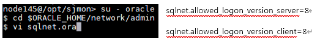

Oracle Agent Installation
Oracle Agent를 설치하려면 먼저 Oracle이 설치되어 있는 Agent의 OS type에 맞춰 SJMON Agent를 설치하신 뒤 Oracle 연결을 시도할 수 있습니다.
1. Prerequisite Check
모니터링 대상 오라클 버전, IP, Port, SID, 계정정보를 확인합니다.
SID는 UNIX 기준 아래와 같은 명령어로 확인 가능합니다. (ora_smon_SID)
Windows는 아래와 같은 명령어로 확인 가능합니다. (OracleServiceSID)
2. OS Setting for the Agent Program
- sjmon 계정이 oracle 에 접속할 수 있도록 OS profile 을 수정.
오라클을 사용하는 계정의 OS profile 을 cat 으로 열어 해당 내용을 복사하여 sjmon 을 위한 OS 계정의 OS profile 에 복사합니다.
- 인스턴스 설정 (대소문자 주의)
인스턴스 접속 및 계정 설정 작업을 위하여 인스턴스를 명시해줍니다. 인스턴스가 1개인 경우에는 필수 사항은 아니지만, 여러 개의 인스턴스를 접속하는 경우에는 인스턴스를 명시해 준 후 접속해야 원하는 인스턴스에 대하여 작업이 가능합니다.
- Unix
- Windows
- 인스턴스 접속
1안)
#> sqlplus " /as sysdba"
2안)
#> sqlplus sys/패스워드 as sysdba
고객사 보안정책 상 $ORACLE_HOME/network/admin/sqlnet.ora 파일에 SQLNET.AUTHENTICATION_SERVICES=(NTS) 를 설정하였을 경우 1안에서 ORA-01031: insufficient privileges 와 같은 에러메시지가 나오고 접속이 안될수 있습니다.
이런 경우 고객에게 패스워드를 고객에게 물어보거나 고객이 직접 타이핑할 수 있게 하여 sys 계정으로 sysdba 권한을 가지고 로그인할 수 있어야 한다.
- 접속한 인스턴스 및 계정 확인
- DB 모니터링을 위한 DB 계정을 생성
Oracle 버전에 맞는 ora_user.sql 파일을 업로드한 후, 파일을 실행하여 계정 생성 작업을 진행합니다. 여러 개의 인스턴스 모니터링 시, 각 인스턴스로 접속을 변경하면서 진행해야 합니다.
-
Linux
-
Windows
11g R2 이하 12c R1 이상 (cdb 환경)/(non-cdb 환경) ora_user.sql ora_user.sql -- 11g R2 이하
-- sys as sysdba 로 실행
create user ora_user identified by "ora123";
alter user ora_user account unlock;
grant create session to ora_user;
create view SJMON$KSUSGSTA as select * from X$KSUSGSTA;
create view SJMON$KSUSE as select * from X$KSUSE;
create view SJMON$KSUPR as select * from X$KSUPR;
create view SJMON$KSLWT as select * from X$KSLWT;
create view SJMON$KSLSCS as select * from X$KSLSCS;
create view SJMON$KSLEI as select * from X$KSLEI;
create view SJMON$KSLED as select * from X$KSLED;
create view SJMON$KQFTA as select * from X$KQFTA;
create view SJMON$KQFCO as select * from X$KQFCO;
-- 11g R2 이하
-- sys as sysdba 로 실행
create user ora_user identified by "ora123";
alter user ora_user account unlock;
grant create session to ora_user;
create view SJMON$KSUSGSTA as select * from X$KSUSGSTA;
create view SJMON$KSUSE as select * from X$KSUSE;
create view SJMON$KSUPR as select * from X$KSUPR;
create view SJMON$KSLWT as select * from X$KSLWT;
create view SJMON$KSLSCS as select * from X$KSLSCS;
create view SJMON$KSLEI as select * from X$KSLEI;
create view SJMON$KSLED as select * from X$KSLED;
create view SJMON$KQFTA as select * from X$KQFTA;
create view SJMON$KQFCO as select * from X$KQFCO;
grant select on SJMON$KSUSGSTA to ora_user;
grant select on SJMON$KSUSE to ora_user;
grant select on SJMON$KSUPR to ora_user;
grant select on SJMON$KSLWT to ora_user;
grant select on SJMON$KSLSCS to ora_user;
grant select on SJMON$KSLEI to ora_user;
grant select on SJMON$KSLED to ora_user;
grant select on SJMON$KQFTA to ora_user;
grant select on SJMON$KQFCO to ora_user;
grant select on gv_$parameter to ora_user;
grant select on v_$parameter to ora_user;
grant select on v_$sys_time_model to ora_user;
grant select on v_$session to ora_user;
grant select on v_$sess_time_model to ora_user;
grant select on v_$process to ora_user;
grant select on v_$sess_io to ora_user;
grant select on dba_data_files to ora_user;
grant select on dba_free_space to ora_user;
grant select on dba_segments to ora_user;
grant select on v_$segment_statistics to ora_user;
grant select on v_$sql to ora_user;
grant select on v_$sqltext_with_newlines to ora_user;
grant select on v_$sql_plan to ora_user;-- 12c R1 이상
-- sys as sysdba 로 실행
alter session set "ORACLE_SCRIPT"=true;
create user ora_user identified by "ora123";
alter user ora_user account unlock;
grant create session to ora_user;
grant create synonym to ora_user;
create view SJMON$KSUSGSTA as select * from X$KSUSGSTA;
create view SJMON$KSUSE as select * from X$KSUSE;
create view SJMON$KSUPR as select * from X$KSUPR;
create view SJMON$KSLWT as select * from X$KSLWT;
create view SJMON$KSLSCS as select * from X$KSLSCS;
create view SJMON$KSLEI as select * from X$KSLEI;
create view SJMON$KSLED as select * from X$KSLED;
create view SJMON$KQFTA as select * from X$KQFTA;
create view SJMON$KQFCO as select * from X$KQFCO;
grant select on SJMON$KSUSGSTA to ora_user;
grant select on SJMON$KSUSE to ora_user;
grant select on SJMON$KSUPR to ora_user;
grant select on SJMON$KSLWT to ora_user;
grant select on SJMON$KSLSCS to ora_user;
grant select on SJMON$KSLEI to ora_user;
grant select on SJMON$KSLED to ora_user;
grant select on SJMON$KQFTA to ora_user;
grant select on SJMON$KQFCO to ora_user;
grant select on gv$parameter to ora_user;
grant select on v_$parameter to ora_user;
grant select on v_$sys_time_model to ora_user;
grant select on v_$session to ora_user;
grant select on v_$sess_time_model to ora_user;
grant select on v_$process to ora_user;
grant select on v_$sess_io to ora_user;
grant select on dba_data_files to ora_user;
grant select on dba_free_space to ora_user;
grant select on dba_segments to ora_user;
grant select on v_$segment_statistics to ora_user;
grant select on v_$sql to ora_user;
grant select on v_$sqltext_with_newlines to ora_user;
grant select on v_$sql_plan to ora_user;
conn ora_user/ora123; -- 계정변경
create synonym SJMON$KSUSGSTA for sys.SJMON$KSUSGSTA;
create synonym SJMON$KSUSE for sys.SJMON$KSUSE;
create synonym SJMON$KSUPR for sys.SJMON$KSUPR;
create synonym SJMON$KSLWT for sys.SJMON$KSLWT;
create synonym SJMON$KSLSCS for sys.SJMON$KSLSCS;
create synonym SJMON$KSLEI for sys.SJMON$KSLEI;
create synonym SJMON$KSLED for sys.SJMON$KSLED;
create synonym SJMON$KQFTA for sys.SJMON$KQFTA;
create synonym SJMON$KQFCO for sys.SJMON$KQFCO; -
참고 Oracle 12c 버전의 경우에는, SJMON 에서 사용하는 JDBC driver Version 이 낮은 관계로 아래와 같이
$ORACLE_HOME/network/admin/sqlnet.ora파일 내에 두 줄을 추가합니다.
sqlnet.allowed_logon_version_server=8
sqlnet.allowed_logon_version_client=8

3) Agent Program Setting
SJMON Agent가 설치된 디렉터리에서 agent.properties 파일을 sjmon 계정으로 열어서 DB 관련 정보(굵은 글자)를 입력합니다.
만약 두개 이상의 DB instance를 모니터링 한다면 agent.db.count 값을 변경하고 agent.dbuse, db.count 줄을 제외한 모든 붉은 박스줄을 instance 개수만큼 복사하여 입력합니다.
agent.db.user1 과 agent.db.pass1 은 DB 모니터링을 사용할 DB 계정을 입력합니다. 입력한 계정이 수행하는 Session 과 SQL 정보는 수집되지 않습니다.
Schedule Time 중 수집 여부를 Y/N 값으로 설정하거나 수집 주기를 변경한 경우, agent를 다시 시작하여 적용할 수 있습니다.
##### Properties used by Agent #################
# Property Version : 2.0
# Agent ID
agent.agent_id = 328
agent.db.sis.agent_id = 329 (인스턴스명)
# Schedule Time
agent.sched.job.inven = 0 0 0 * * ?
agent.sched.job.pm = 0 0 22 * * ?
agent.sched.job.log = 0 0 23 * * ?
…… (중략) ......
##### Properties user should set ###############
# Repository Server Info
agent.host = 172.16.30.94
agent.hport = 43001
# Client Info
agent.ostype = aix
agent.protocol = sftp
agent.home = /opt/sjmon
agent.pipelocation = /opt/sjmon/sjmonpipe
agent.configlocation = /opt/sjmon/agent.properties
#Database Monitoring
agent.dbuse = Y
agent.db.count = 1
agent.db.dbms1 = oracle
agent.db.version1 = 11g (10g/11g/12c)
agent.db.driver1 = oracle.jdbc.driver.OracleDriver
agent.db.connection1 = jdbc:oracle:thin:@10.1.2.51:30001 (jdbc:oracle:thin:@IP주소:포트번호)
agent.db.sid1 = sis (인스턴스명)
agent.db.user1 = ora_user (DB 계정명)
agent.db.pass1 = nFFsqAjURrnmD1mOk4GxHe1razS8PEL3 (DB 계정 비밀번호 암호화한 값)
# Database Oracle Schedule Time
agent.db.sched.global = 0/2 * * * * ?
agent.db.sched.session = 0/1 * * * * ?
agent.db.sched.sql = 0/2 * * * * ?
agent.db.sched.sqltext = 0 * * * * ?
agent.db.sched.sqlplan = 0 * * * * ?
agent.db.sched.param = 0 0 1 * * ?
agent.db.sched.space = 0 10 1 * * ?
…… (이하 생략) ......
4) Agent Program Start & Stop
- Agent Program Start
startObserver.sh 실행합니다
# ./startObserver.sh
- Agent Program Stop
stopAgent.sh 실행합니다
# ./stopAgent.sh
5) Uninstall
undo_ora_user.sql파일을 업로드 후, 아래와 같이 실행하여 생성한 뷰와 계정을 제거합니다.
해당 계정이 사용 중인 경우 제거가 불가능하므로, Agent 를 종료한 후 진행해야 합니다.
| undo_ora_user.sql |
|---|
-- sys / as sysdba 로 실행
-- ora_user로 접속되어 있는 상태에서는 ora_user가 삭제되지 않습니다.
-- 만약 다른 client에서 접속하고 계시다면 ora_user의 접속을 종료해주세요.
-- 또는, agent.properties 파일의 ora_user정보를 올바르게 입력한 상태로 ./startObserver.sh을 실행하여
-- sjmon에 접속하셨다면, ./stopObserver.sh로 종료하고 시행시켜 주십시오.
DROP VIEW SJMON$KSUSGSTA;
DROP VIEW SJMON$KSUSE;
DROP VIEW SJMON$KSUPR;
DROP VIEW SJMON$KSLWT;
DROP VIEW SJMON$KSLSCS;
DROP VIEW SJMON$KSLEI;
DROP VIEW SJMON$KSLED;
DROP VIEW SJMON$KQFTA;
DROP VIEW SJMON$KQFCO;
DROP USER ora_user;